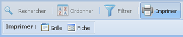

La barre d'outils des éléments de
données
Fonction « Imprimer » les éléments
de données

La fonction « Imprimer » vous offre
deux options d'impression : l'impression de la liste des
éléments de données d'un projet
spécifique montrée dans la grille «
Détails » ou l'impression de la fiche descriptive
d'un élément de donnée
sélectionné.
- Cliquez sur le bouton « Imprimer »
de la barre des fonctions, le sous-menu d'impression
s'affichera;
- La grille « Détails » montre
par défaut 50 éléments de données par
page. L'option d'impression « Grille » imprime
seulement les éléments de données actifs par
page. Si le total des éléments de données du
projet sélectionné dépasse la valeur de 50,
vous pouvez changer la valeur d'affichage des
éléments de données par page dans le «
menu de navigation »:
- Dans le « menu de navigation »
cliquez sur la flèche pour ouvrir la liste
déroulante des valeurs;
- Choisissez la valeur des éléments
affichés par page que vous désirez obtenir : 25,
50, 100, 500; les résultats de la grille «
Détails » s'actualiseront de façon
automatique;
- Sélectionnez l'option « Grille » pour imprimer la liste active des éléments
de données; OU cliquez sur l'élément
de donnée à imprimer dans la grille «
Détails » et ensuite sélectionnez l'option «
Fiche » du sous-menu d'impression.